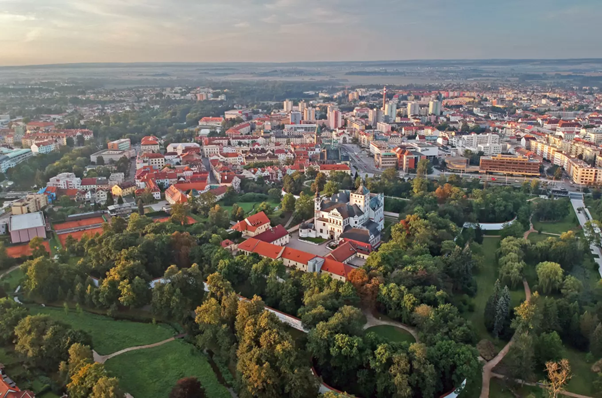
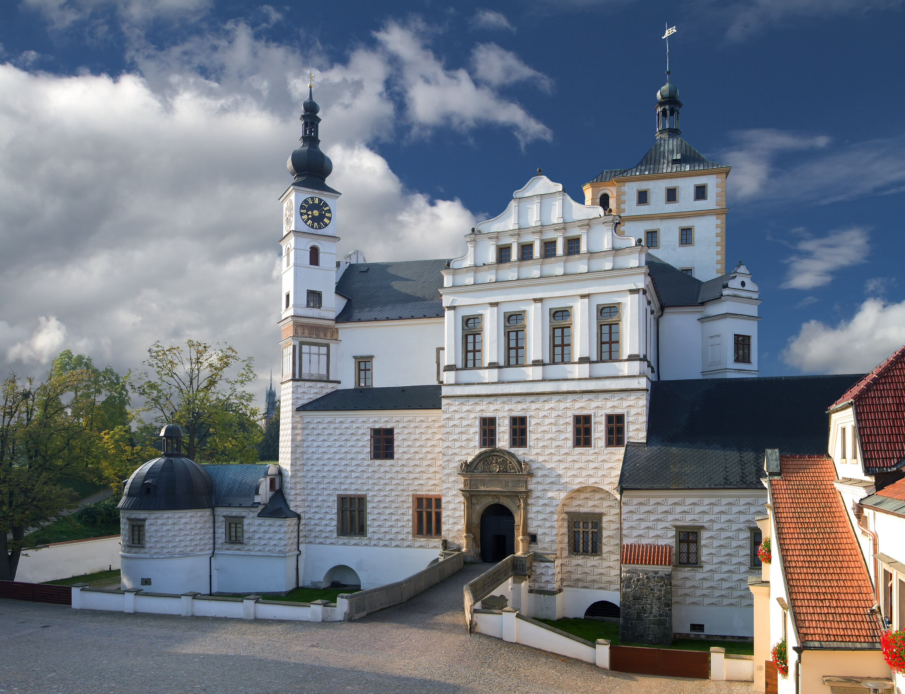
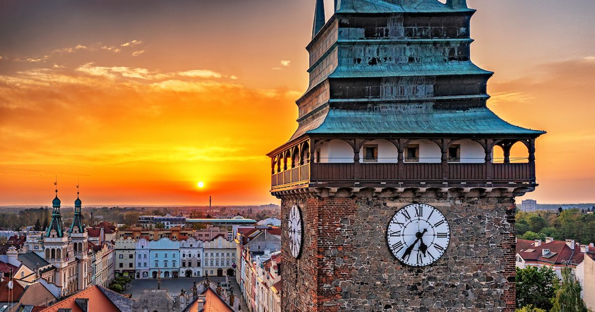
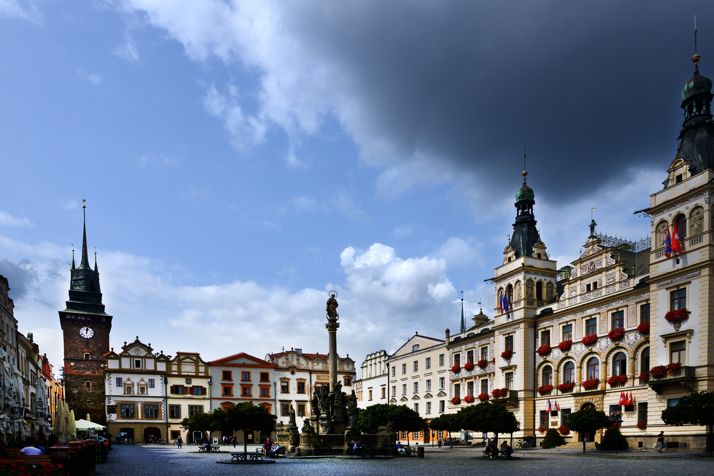

Discover a charming city in eastern Bohemia, famous for its historic architecture, traditional gingerbread and rich cultural heritage.
Pardubice is a historic city in eastern Bohemia and the capital of the Pardubice Region. It has a long history dating back to the Middle Ages and became an important centre of trade and culture.
The city is known for its beautiful historic centre, Renaissance architecture and traditional gingerbread. Pardubice is also famous for the Velká pardubická, one of the most challenging horse races in Europe.
Pardubice Region
Czechia
Gingerbread and horse racing
Pardubice Castle
Pardubice Castle is one of the most important historic landmarks in the city. Originally built as a medieval fortress, it was transformed into a magnificent Renaissance residence in the 16th century by the Pernštejn family.
The castle is surrounded by impressive fortifications and a wide moat. Today, it houses the East Bohemian Museum, where visitors can discover the history, art and culture of the region.

The Green Gate is one of the most famous landmarks in Pardubice. It stands at the entrance to the historic centre and has become an important symbol of the city.
The gate was originally built in the 16th century and later received its distinctive Renaissance appearance. Its tall tower offers visitors the opportunity to enjoy beautiful views of the city and the surrounding countryside.

Pernštýn Square is the historic heart of Pardubice. It is surrounded by colourful Renaissance and Baroque houses, creating one of the most beautiful historic settings in the city.
The square is named after the influential Pernštejn family, who played an important role in the development of Pardubice. Visitors can admire the historic architecture, explore charming streets and enjoy the atmosphere of the old town.

Approx. 92,000 residents
Approx. 82 km²
1295
Pardubice Gingerbread